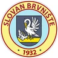
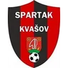

Posledný zápasA-mužstvo
 FK Senicadomáci
FK SenicadomáciVýsledok 1:5
 TJ Partizán Domanižahostia
TJ Partizán DomanižahostiaPrehrapolčas 1:4
Návrh webu · nie je to oficiálna stránka klubu
V. liga Severozápad, 12. miesto zo 16
Posledný zápasA-mužstvo
FK SenicadomáciVýsledok 1:5
TJ Partizán DomanižahostiaPrehrapolčas 1:4
4–3–9výhry, remízy a prehry vo všetkých súťažiach, skóre 22:41

TJ Slovan Brvnište
TJ Spartak Kvašovvýkop 17:00V. liga Severozápad
| # | Tím | Z | V | R | P | Skóre | B |
|---|---|---|---|---|---|---|---|
| 1 | 15 | 10 | 3 | 2 | 30:15 | 33 | |
| 2 | 15 | 10 | 3 | 2 | 44:22 | 33 | |
| 3 | TJ Spartak Kvašov | 15 | 10 | 1 | 4 | 29:12 | 31 |
| 4 | 15 | 8 | 5 | 2 | 36:20 | 29 | |
| 5 | 15 | 8 | 4 | 3 | 35:20 | 28 | |
| 6 | 15 | 7 | 3 | 5 | 40:18 | 24 | |
| 7 | 15 | 7 | 3 | 5 | 23:18 | 24 | |
| 8 | 15 | 7 | 3 | 5 | 39:24 | 24 | |
| 9 | 15 | 6 | 5 | 4 | 30:20 | 23 | |
| 10 | 15 | 6 | 3 | 6 | 28:33 | 21 | |
| 11 | 15 | 5 | 3 | 7 | 18:33 | 18 | |
| 12 | 15 | 4 | 3 | 8 | 19:37 | 15 | |
| 13 | MFK Vrbové | 15 | 3 | 3 | 9 | 20:40 | 12 |
| 14 | 15 | 2 | 2 | 11 | 19:34 | 8 | |
| 15 | TJ Slovan Brvnište | 15 | 2 | 2 | 11 | 8:35 | 8 |
| 16 | 15 | 1 | 2 | 12 | 13:50 | 5 |
Hráči, ktorí v kalendárnom roku 2026 nastúpili alebo boli v nominácii na zápas (podľa Sportnetu).